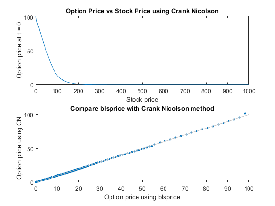

close all; clear all; clc; hold off;
T = 1;
S1 = 100;
K = 100;
r = 0.02;
sigma = 0.4;
Smax = S1*exp((r-0.5*sigma*sigma)*T + 3*sigma*sqrt(T));
c = 4;
dtau = (T/25)/c;
S = [0:0.1*K/c:0.4*K,...
0.425*K:0.05*K/c:0.8*K,...
0.805*K:0.02*K/c:0.9*K,...
0.905*K:0.01*K/c:1.1*K,...
1.12*K:0.02*K/c:1.2*K,...
1.25*K:.05*K/c:1.6*K,...
1.7*K:0.1*K/c:2*K,...
2.2*K, 2.3*K, 2.4*K, 2.6*K, 2.8*K,...
3.2*K, 3.4*K, 3.6*K, 4.3*K, 5*K, 7.5*K, 8.125*K, 8.75*K, 9.375*K, 10*K];
M = length(S);
N = T/dtau;
V = zeros(N,M + 1);
for i = 1: M
V(1, i) = max(K - S(i), 0);
end
V(1 , M+1) = 0;
alpha = zeros(1,M+1);
beta = zeros(1,M+1);
I = eye(M+1);
for i = 2:M-1
alpha_central(i) = ((sigma ^ 2) * (S(i) ^2))/(((S(i) - S(i-1)) ...
* (S(i+1) - S(i-1)))) - (r * S(i))/(S(i+1) - S(i-1));
beta_central(i) = ((sigma ^ 2) * (S(i) ^2))/(((S(i+1) - S(i)) ...
* (S(i+1) - S(i-1)))) + (r * S(i))/(S(i+1) - S(i-1));
alpha_forward(i) = ((sigma ^ 2) * (S(i) ^2))/(((S(i) - S(i-1)) ...
* (S(i+1) - S(i-1))));
beta_forward(i) = ((sigma ^ 2) * (S(i) ^2))/(((S(i+1) - S(i)) ...
* (S(i+1) - S(i-1)))) + (r * S(i))/(S(i+1) - S(i-1));
if (alpha_central(i) >= 0 ) && (beta_central(i) >= 0)
alpha(i) = alpha_central(i);
beta(i) = beta_central(i);
else
alpha(i) = alpha_forward(i);
beta(i) = beta_forward(i);
end
end
vector1 = [-r*dtau/2, dtau/2 *(alpha(1:M-1) + beta(1:M-1) + r), 0];
vector2 = [0, 0, -dtau/2 * beta(1:M-1)];
vector3 = [-dtau/2 * alpha(1:M-1), 0, 0];
M_hat = spdiags(vector1', 0, M+1, M+1) ...
+ spdiags(vector2', 1, M+1, M+1) + spdiags(vector3', -1, M+1, M+1);
[L, U] = lu(I + M_hat);
for n = 1:N-1
V(n+1, 1) = V(n, 1) * ((1 + (r / 2) * dtau) / (1 - (r / 2) * dtau));
V(n+1, M) = V(n, M);
B = (I - M_hat)*transpose(V(n, :));
V(n+1, :) = transpose(U\(L\B));
end
indx1 = max(find(S<=S1));
indx2 = min(find(S>=S1));
if indx1 == indx2
V1= V(N, indx1);
else
w = (S1-S(indx1))/(S(indx2)-S(indx1));
V1 = V(N,indx1)*w + (1-w)*V(N, indx2);
end
disp(['Option price at (t=0) is ', num2str(V1), ' when S=', num2str(S1)]);
hold on;
[C,P] = blsprice(S(1:M),K, r, T, sigma);
subplot(2,1,1);
plot(S(1:M), P); plot(S(1:M), V(N, 1:M));
title('Option Price vs Stock Price using Crank Nicolson');
xlabel('Stock price'); ylabel('Option price at t = 0');
hold off;
subplot(2,1,2);
scatter(P, V(N,1:M), 10, 'filled');
refline;
title('Compare blsprice with Crank Nicolson method');
xlabel('Option price using blsprice'); ylabel('Option price using CN');
Option price at (t=0) is 14.2523 when S=100
